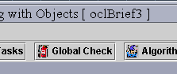
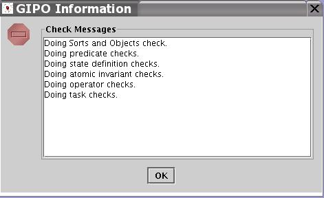
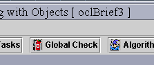
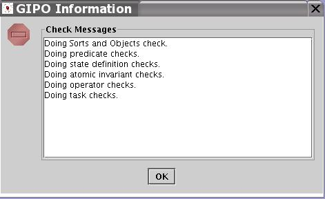

Generally, before use any tools under the "Tool" menu, it's recommended
to do a global check.
- 
Figure 1 Global Verification Check Button

- Figure 2 Result Window of
Global Check
In every basic editor, there is a verify button for performing local verification checks. There are also a function for global verification which works on the completed or partially completed domain specification. Select the button "Global Check" on the main toolbar (Figure 1).Generally, before use any tools under the "Tool" menu, it's recommended to do a global check.

Figure 1 Global Verification Check Button

Figure 2 Result Window of Global Check
back